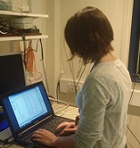

Career
My Story So Far.
-

2013 - 2014
Sequensis
Graduate Software Developer
-

2014-2015
MSc Computer Science
University of Birmingham
The main language of this conversion course was Java. Programming work included both individual work and group work (developing a messaging system). Other modules included databases (PostgreSQL), datastructures, operating systems etc. I completed my masters project in C#.
-
2013 - 2014
Engineering Recruitment Consultant
Working for a firm specialising in engineering recruitment. I provided for a number of industries including Oil and Gas, Motorsport, Defence and Nuclear Power.
-

2012 - 2013
First year of PhD
University of Nottingham
During this time I continued my research including a study on over 100 children across ten days. My research required the use of both Matlab and Python. I also assisted on a study which is now under review for publishing. I decided not to continue due to a number of unforseen circumstances.
-

2011 - 2012
MSc Cognitive NeuroScience and Neuroimaging
University of Nottingham
My main project was an fMRI study examining the neural differences between social and non-social executive function tasks. I used Matlab for stimuli creation, recording responses and analysis.
-

2011 - 2012
BSc Psychology
University of Plymouth
My BSc project was an EEG study examining handedness and interhemispheric conduction time. I achieved a 2:1 Honors (68%) for the overall degree and a first for my project.